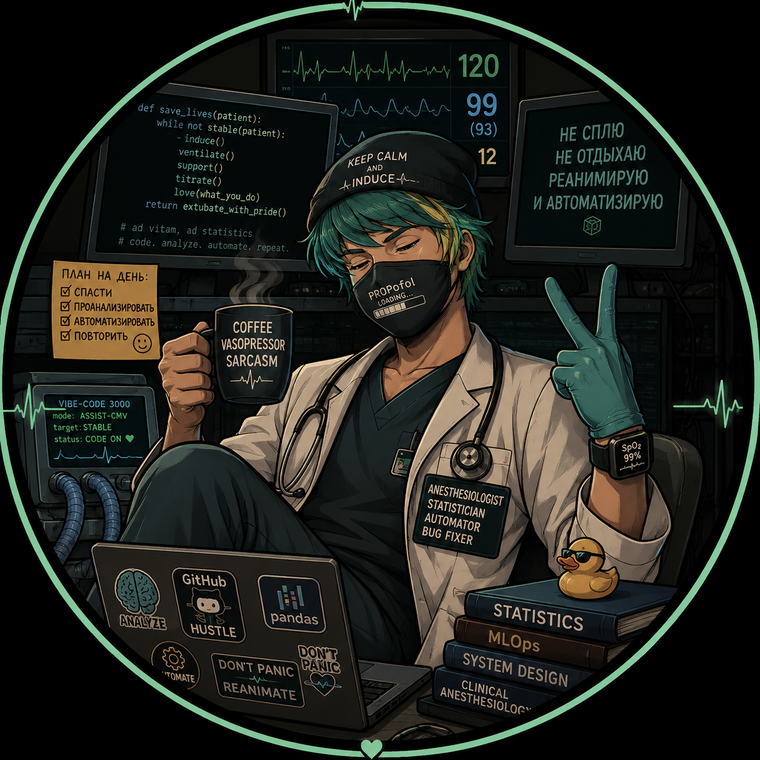

Анестезиология и реаниматология
Интенсивная терапия, периоперационное ведение, мониторинг и безопасность пациента.
Врач анестезиолог-реаниматолог · Clinical Researcher · Bioequivalence & Biostatistics
Клинические исследования, биоэквивалентность и фармакокинетика, статистический анализ, медицинская документация и валидируемые eCRF — на стыке клинической медицины и инженерии данных.

Практикующий врач анестезиолог-реаниматолог, совмещающий клиническую работу в интенсивной терапии с исследовательской и технической экспертизой. Научное направление — анестезиология и реаниматология.
Многолетний опыт в клинических исследованиях биоэквивалентности (Фаза I): от со-исследователя в десятках протоколов до роли главного исследователя в исследовании, одобренном Минздравом России. Дополнительно — сертифицированный GCP-аудитор, готовый проводить аудиты клинических исследований. Это сочетание клинической ответственности и точности данных.
Отдельный фокус — биостатистика, фармакокинетика и медицинское письмо: я не только провожу расчёты биоэквивалентности, но и разрабатываю собственные валидируемые инструменты на R и Python для автоматизации PK-расчётов, статистики, отчётности и электронных форм (eCRF/ИРК).
Клиническая медицина, наука и инженерия данных в одном профиле.
Интенсивная терапия, периоперационное ведение, мониторинг и безопасность пациента.
Проведение протокольных процедур по стандартам GCP (ICH E6 R3), Фаза I.
Дизайн и анализ BE-исследований, оценка терапевтической эквивалентности.
Cmax, Tmax, AUC0-t, AUC0-inf, Kel, T½, CL, Vd, MRT — индивидуальные профили.
ANOVA / mixed models, GMR, 90% доверительные интервалы, внутрисубъектный CV.
Клинические обзоры и резюме, структурирование регистрационной документации.
Автоматизация расчётов, статистики и генерации отчётов Word/Excel.
Проектирование электронных и бумажных индивидуальных регистрационных карт.
Подготовка и структурирование материалов для регистрационного досье.
Контроль качества данных, прослеживаемость, валидационный подход (GxP).
Сертифицированный GCP-аудитор: проведение аудитов КИ и подготовка к инспекциям.
От со-исследователя в десятках протоколов до главного исследователя.
Клиническое исследование, одобренное Минздравом России. С 2026 — настоящее время.
Терапевтические препараты, Фаза I: протокольные процедуры, отбор PK-проб, ведение документации.
Обучение с сертификацией (Школа GCP-аудиторов, QARP). Готов проводить аудиты исследований и исследовательских площадок.
Полный цикл: от дизайна исследования до разделов отчёта.
2×2 перекрёстные, репликативные и 4-периодные дизайны; натощак и после еды.
Расчёт AUC0-t, AUC0-inf, Cmax, Tmax, Kel, T½ по индивидуальным профилям.
GMR и 90% доверительные интервалы, ANOVA / mixed models, внутрисубъектный CV, SABE.
Оценка элиминации, диагностика выбросов, студентированные остатки, визуализация.
Воспроизводимые пайплайны расчётов и формирование таблиц результатов.
Подготовка PK- и статистических разделов отчётов по стандартам ICH M9.
Структурирование клинических и регистрационных материалов.
Подготовка клинических обзоров и аналитических разделов.
Нон-клинический обзор: систематизация доклинических данных.
Клинический обзор: интеграция данных эффективности и безопасности.
Резюме профиля безопасности и эффективности препарата.
Сведение данных в единую доказательную структуру.
Поиск и критическая оценка научной литературы (PubMed, eLIBRARY и др.).
Собственные инструменты для клинических исследований на R и Python.
Полный цикл PK/БЭ-анализа: расчёт параметров, статистика (ANOVA, GMR, 90% ДИ, CV) по ICH M9, визуализация профилей и доверительных интервалов, авто-отчёты в Word/Excel.
Воспроизводимые пайплайны для 2- и 4-периодных перекрёстных дизайнов, исследований натощак и после еды с формированием статистических таблиц.
Генерация индивидуальных регистрационных карт (ИРК) и журналов под конкретное исследование, подписных листов и маркировки образцов.
Веб-учёт препаратов и аликвот с аудит-трейлом, ролями и валидационной документацией — с ориентацией на GxP.
Журнал температуры морозильника −80 °C из данных регистратора: печатные графики хранения, экспорт PNG/PDF/CSV, контроль уставок и тревог.
Пакетная обработка и конвертация клинической документации, генерация типовых форм и таблиц для исследовательской рутины.
Все инструменты проектируются с упором на воспроизводимость, прослеживаемость данных и валидируемость (GxP-подход).
Майкопский государственный технологический университет.
Ставропольский государственный медицинский университет. Аккредитация — 2023.
Организация здравоохранения и общественное здоровье; функциональная диагностика.
Институт биоинформатики, Санкт-Петербург. Статистика для биологов и медиков.
ICH E6 (R3) GCP (TGHN; ПИШ МГУ им. Ломоносова); Школа GCP-аудиторов (QARP); MedDRA Advanced Coding (MSSO).
Старт роли главного исследователя (исследование одобрено Минздравом РФ); научная публикация в «Медицинском алфавите».
Открыт к сотрудничеству в клинических исследованиях, биоэквивалентности, биостатистике и разработке инструментов для КИ.
Дополнительные контакты и ссылки на проекты — по запросу.